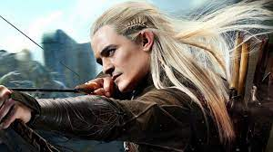
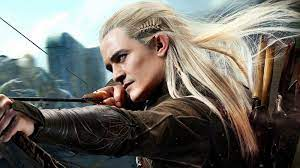
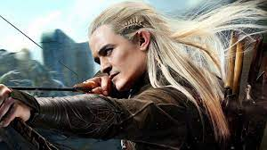
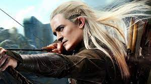

Fictional history Legolas was the son of Thranduil, King of the Woodland Realm of Northern Mirkwood,[T 1] who appeared as "the Elvenking" in The Hobbit.[T 2] Thranduil, one of the Sindar or "Grey Elves",[T 3] ruled over the Silvan Elves or "Wood-elves" of Mirkwood.[T 1] Legolas is introduced at the Council of Elrond in Rivendell, where he came as a messenger from his father to discuss Gollum's escape from their guard.[T 1] Legolas was chosen to be a member of the Fellowship of the Ring, charged with destroying the One Ring. He accompanied the other members in their travels from Rivendell to Amon Hen, serving as the company's archer.[T 4] When the fellowship was trapped by a snowstorm while crossing the Misty Mountains, Legolas scouted ahead, running lightly over the snow, and told Aragorn and Boromir that the thick snow they were trying to push through was only a narrow wall.[T 4] Back in the lowlands of Hollin, Legolas helped fend off an attack by Saruman's wargs. Gandalf then led the fellowship on a journey underground through Moria.[T 5] In Moria, Legolas helped fight off Orcs and recognized "Durin's Bane" as a Balrog.[T 6] After Gandalf's fall, Aragorn led the Fellowship to the Elven realm of Lothlórien. Legolas spoke to the Elf-sentries there on behalf of the Fellowship.[T 7] There was initially friction between Legolas and the Dwarf Gimli, because of the ancient quarrel between Elves and Dwarves, rekindled by Thranduil's treatment of Gimli's father Glóin.[T 2] Legolas and Gimli became friends when Gimli greeted Galadriel respectfully.[T 7] When the fellowship left Lothlórien, Galadriel gave the members gifts; Legolas received a longbow,[T 8] which he used to bring down a Nazgûl's flying steed in the dark with one shot.[T 9] After Boromir's death and the capture of Merry Brandybuck and Pippin Took by orcs, Legolas, Aragorn, and Gimli set out across Rohan in pursuit of the two captured hobbits.[T 10] In the forest of Fangorn Legolas and his companions met Gandalf, resurrected as "Gandalf the White," who delivered a message to Legolas from Galadriel. Legolas interpreted this as foretelling the end of his stay in Middle-earth: